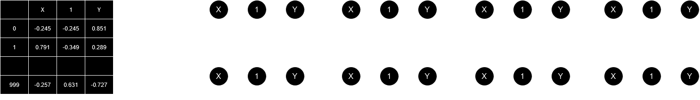
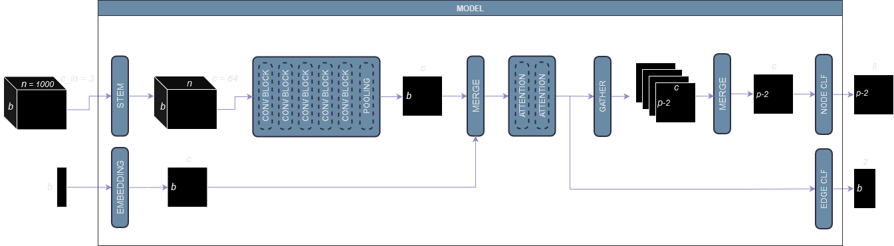
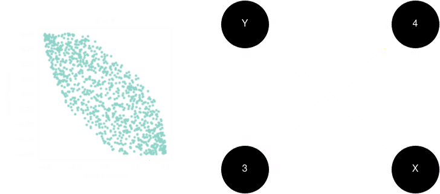
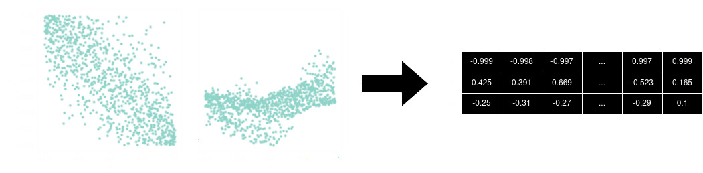
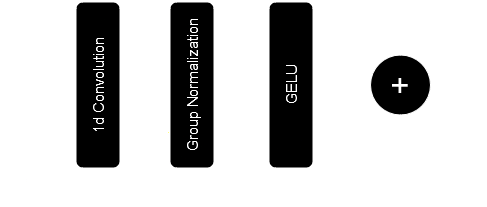
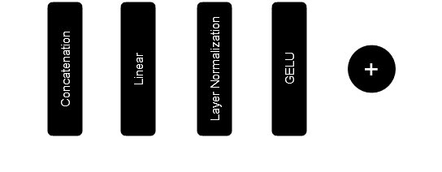
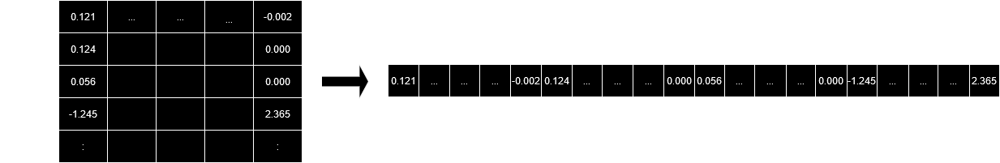

Adia Lab Causal Discovery Challenge - 1st Place Solution
In this competition, participants were asked the following question: given observations of some variables, can we correctly classify each variable according to its relationship with the treatment and the outcome ?

To train models, participants had access to 25,380 pairs of observational data and their corresponding causal graph. For each pair, the number of observations was fixed to 1,000 but the number of variables ranged from 3 to 10 (treatment and outcome included). More information about the dataset can be found on the CrunchDAO website.
Submissions were ranked by computing the balanced accuracy (the average of recall obtained on each class). The solution presented below clinched the top spot achieving 76.7% on the private leaderboard.
Solution Overview
The solution is directly inspired by graph neural networks. Here, each variable is seen as a node of a fully connected bidirectional graph. The model receives data from a single graph at a time. It uses convolutions and self-attention to extract features for every edge. Those features are then used to classify each node into one of the 8 possible categories.

Data Preprocessing
The observational data are turned into a set of edge data. A simple way to represent an edge is by constructing a two-channel tensor: one channel holding the 1,000 observations of node and the other channel holding the observations of node . Observations would be sorted according to the values taken by . It turned out that just using raw values led to suboptimal results. Consequently, an extra channel holding the coefficients of a multivariate kernel regression was added.

The multivariate kernel regression finds a set of coefficients such that where is the number of nodes and is the value of node taken at the - th observation. The coeficients are found by computing the solution to a weighted local linear regression. The goal is to minimize:
where the weight function derives from a gaussian kernel.

Finally, each set of observational data with variables is transformed into a 3d tensor:
- the first dimension has size (the number of directed edges)
- the second dimension has size 3 (the number of channels)
- the last dimension has size 1000 (the number of observations)
In addition to the previous tensor, the model also receives a tensor of size which holds integers identifying the type of edge. The type of an edge is one of the following:
- is (the treatment) but is not (the outcome)
- is and is
- is but is not
- is and is
- is neither nor but is
- is neither nor but is
- none of the above
Model Architecture
The model receives edge data and performs the following steps:
- a stem layer increases the number of channels to 64 (with a simple linear transformation)
- edge features are extracted using a stack of 5 residual convolutional blocks
- a pooling operation outputs a 64-dimensional embedding for each edge
- the edge embeddings are merged with the edge type embeddings and go through a stack of 2 self-attention layers (outputting refined edge embeddings)
Finally, the edge embeddings are given to 2 classification heads:
- the first classification head retrieves the adjacency matrix (but is only used at training)
- for each node different from and , the second classification head merges embeddings from edges , , and in order to perform node classification
Convolutional Block
Each convolutional block is a 1d convolution followed by Group Normalization and GELU activation, with residual connection.

There is a stack of 5 convolutional blocks. After the convolutions, an average pooling is performed to generate a 64-dimensional embedding for each edge.
Merge Operator
The merge operator concatenates a list of inputs on their channel dimension. Then, it reduces the number of channels back to the model dimension (64). A Layer Normalization is applied, followed by GELU activation.

Edge Classification
This classification head retrieves the adjacency matrix but is only used at training. A linear layer reduces the edge embeddings to 2 channels.
Node Classification
First, edge embeddings are merged to generate node embeddings (via the Merge operator). For node , embeddings from edges , , and are gathered. A linear layer transforms the node embeddings into 8 channels (i.e. the number of classes).

About Training
During the training process, the learning rate is reduced following a cosine annealing schedule. The selected optimizer was AdamW. The final loss is the sum of 2 losses:
- the cross entropy loss computed on the binary edge classification task
- the cross entropy loss computed on the node classification task
In each case, the loss is weighted by the inverse frequency of each class.